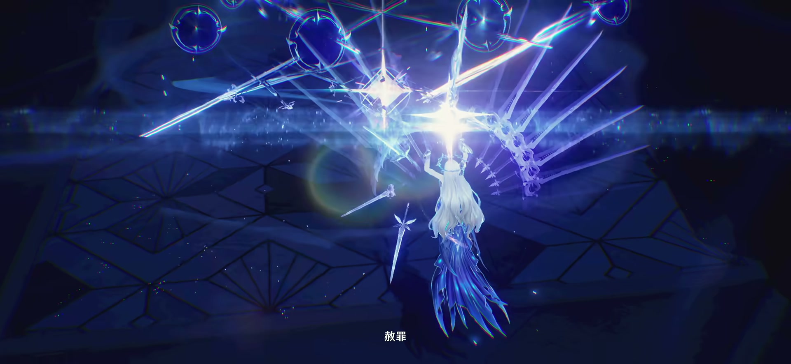

研究更新：2026-10-26（UTC+8）｜覆盖截至 3.7「镜锁妄世，心照红尘」的正式上线内容。
目的：把版本更新中可比较的角色、剧情、地图、Boss、武器与声骸产出拆成可复核指标，而非评价角色强度或游戏质量。
| 模块 | 截至 3.7 的可比结论 | 推荐作为产能指标 |
|---|---|---|
| 角色 | 共 57 名角色条目（5 星 45、4 星 12）；开服后 21 个更新版本新增 40 名，平均 1.90 名/版；其中 37 名为 5 星 | 新角色数、5/4 星结构、特殊形态/新机制 |
| 剧情 | 潮汐任务正常游玩录屏合计约 71 小时 28 分；版本间差异很大 | 主线时长；伴星/危行/奇谭另列，不能混加 |
| 地图 | 新增永久区域/大型场景至少 15 次；官方未公布可换算的 km² 面积 | 永久区域/子区数、探索机制、资源类型 |
| Boss | 常驻「全息战略」可挑战 Boss 共 23 名：强袭 6、幻痛 10、同步 5、演武 2 | 全息 Boss 数与新增节奏；不把普通敌人图鉴条目混入 |
| 武器与声骸 | Encore Release 快照：武器 124 把、合鸣效果 37 套；3.0—3.7 新增 21 把 5 星武器、16 套合鸣效果 | 新 5 星武器数、合鸣套数、声骸条目数（另列） |
| 版本 | 5 星（数量） | 4 星（数量） |
|---|---|---|
| 1.0 | 8 | 9 |
| 1.1 | 2 | 0 |
| 1.2 | 2 | 0 |
| 1.3 | 1 | 1 |
| 1.4 | 1 | 1 |
| 版本 | 5 星（数量） | 4 星（数量） |
|---|---|---|
| 2.0 | 2 | 0 |
| 2.1 | 2 | 0 |
| 2.2 | 1 | 0 |
| 2.3 | 2 | 0 |
| 2.4 | 2 | 0 |
| 2.5 | 1 | 0 |
| 2.6 | 2 | 0 |
| 2.7 | 2 | 0 |
| 2.8 | 1 | 1 |
| 版本 | 5 星（数量） | 4 星（数量） |
|---|---|---|
| 3.0 | 2 | 0 |
| 3.1 | 2 | 0 |
| 3.2 | 1 | 0 |
| 3.3 | 2 | 0 |
| 3.4 | 3 | 0 |
| 3.5 | 2 | 0 |
| 3.6 | 2 | 0 |
| 3.7 | 2 | 0 |
复核结果： 表内合计为 57 名（5 星 45、4 星 12）。排除 1.0 开服阵容后，1.1—3.7 的 21 个更新版本共新增 40 名，平均 1.90 名/版；其中 37 名为 5 星、3 名为 4 星，新增角色的 5 星占比为 92.5%。分阶段看：1.1—1.4 为 2.00 名/版，2.0—2.8 为 1.78 名/版，3.0—3.7 为 2.00 名/版。
| 版本 | 新形态 | 处理方式 |
|---|---|---|
| 1.0 | 衍射、湮灭 | 开服/主线基础形态 |
| 2.2 | 气动 | 复用主角资产，但拥有一套独立属性与技能机制 |
| 3.5 | 导电 | 同上；应在“角色战斗模块迭代”中统计 |
角色不应仅以“出一个新模型”衡量。标准角色至少涉及普攻、重击、空中攻击、闪避反击、共鸣技能、共鸣回路、共鸣解放、变奏/延奏，以及与声骸和队伍协奏系统的联调。
| 案例 | 关键结构 | 对制作产能的含义 | 参考拆解 |
|---|---|---|---|
| 今汐（1.1） | 4 段普攻/重击/空中动作；常规 E「流光夕影」在条件满足后替换为强化 E「神霓飞芒」；强化状态与队友协同攻击、属性伤害积层相连；大招独立范围爆发；变奏为强化 E 提供前置条件 | 在通用六技能框架上增加“状态切换 + 队友积层 + 单次高倍率收束”。除动作和特效外，还要实现资源条、状态替换、队伍交互与爆发轴 | B站机制解析、17173 输出轴说明 |
本轮拆解结论：两套形态战斗体系，按技能说明可拆成 26 个战斗动作条目（9 + 16 + 1）。 每段连击和有独立输入/名称的招式各记一项；计数依据是 Encore 技能文本与官方战斗演示，属于本报告的可复算拆分。B 站检索找到了动作鉴赏与双形态测评，但没有找到能验证的“去重动画文件总数”；本轮没有解包客户端，因此 26 不能表述为 26 个引擎动画资产或 26 套动作模组。待机、移动、受击、转身、收刀、表情与剧情动画也未计入这 26 项。

图片均为库洛官方 《共鸣者战斗演示｜卡提希娅》 的研究用节选，非二创设定图；上方形态图分别取自 00:13.5 和 00:52，点击可查看 1920 × 886 原图。画面用于展示动作风格；具体招式数量按下表的技能文本核算。
| 动作类别 | 卡提希娅形态 | 数量 | 芙露德莉斯形态 | 数量 |
|---|---|---|---|---|
| 地面普攻 | 第 1、2、3、4 段 | 4 | 第 1、2、3、4、5 段 | 5 |
| 重击 | 重击 1 种（可空中施放） | 1 | 重击、强化重击 | 2 |
| 空中攻击 | 下落攻击，基础计 1 种 | 1 | 空中攻击第 1、2、3 段 | 3 |
| 上挑攻击 | — | 0 | 地面按跳跃触发的上挑攻击 | 1 |
| 闪避反击 | 小卡闪避反击 | 1 | 大卡闪避反击，可接普攻第 4 段 | 1 |
| 共鸣技能 E | 「此剑以人之名」 | 1 | 「此剑为潮浪之意」「凭风斩浪破敌」 | 2 |
| 变奏入场 | 「此剑，为潮水的过去」 | 1 | 「此剑，为自由的未来」 | 1 |
| 满决意终结技 | — | 0 | 「看潮怒风哮之刃」 | 1 |
| 各形态小计 | 4 + 1 + 1 + 0 + 1 + 1 + 1 + 0 | 9 | 5 + 2 + 3 + 1 + 1 + 2 + 1 + 1 | 16 |
另计首次变身「听骑士从心祈愿」 1 项，合计 26 项。首次变身含角色外观切换、镜头和状态进入；显化期间再次切换形态会调用已列入的小卡/大卡普攻第 2 段或空中攻击，故不重复增加动作数量。
分支处理规则： 小卡下落攻击依回收 0/1/2/3 种剑影出现不同的形态/伤害表现。上表将它合并为 1 个基础动作；若研究“技能表现分支”，可另外记录 3 个非零剑影条件分支，但不能据此认定新增了 3 段独立骨骼动画。同一招式的多次命中、地面/空中皆可释放、倍率变化也不自动扩增计数。延奏为队伍增益，不作为一段新的前台攻击计数。
| 层面 | 卡提希娅 | 芙露德莉斯 | 产能观察 |
|---|---|---|---|
| 角色外观 | 小卡体型、服装与持剑表现 | 大卡体型、长发与显化后的服装/剑影表现 | 两种可操作形态需要分别验证动作适配、布料/头发和穿模表现；实际骨架复用情况未解包确认 |
| 战斗动作 | 4 段普攻、重击、反击、下落、E 与变奏 | 5 段普攻、3 段空中攻击、重击分支、上挑、两段 E 与变奏 | 大卡的招式与空地衔接较丰富；不能只按共用的技能按钮数量估算 |
| 场景实体 | 普攻第 4 段生成神权剑影；重击/变奏生成异权剑影；E 生成人权剑影；下落时回收 | 剑影增益改变控制、风蚀结算与范围目标的效应层数同步 | 三种剑影既有画面表现，也有存在时间、回收与增益传递逻辑 |
| 状态与资源 | 共鸣能量达到条件后可首次变身；回收剑影取得三类增益 | 「显化」基础持续 12 秒；攻击积攒「决意」，120 点开启终结技 | 共鸣能量、显化计时、决意、剑影增益和风蚀层数共同决定技能分支 |
| 解放与恢复 | 首次变身后生命降至上限 50%；低于 50% 时不消耗生命 | 终结时清空决意、退出显化、回复 50% 生命上限，依据敌人风蚀层数放大伤害并清除层数 | 两个解放节点分别承担变身与收束，需要镜头、状态和伤害/治疗逻辑同步 |
| 探索能力 | 负责任务对话、带动作的场景交互和探索工具使用 | 可在水面行走；步行模式可由悬崖踏入空中缓慢行走，持续耗耐力 | 双形态延伸至大世界；遇到上述交互会切回小卡，需要处理形态与交互的衔接 |
从产能角度，可将她记为 1 个新角色、2 套形态战斗体系、26 个可复算战斗动作条目，并另外记录三类剑影、形态切换、两种解放表现和专有探索能力；这个拆分不能直接换算成开发人月或“两名角色”的制作成本。
| 版本 | 常驻潮汐任务（简写） | 时长 | 备注 |
|---|---|---|---|
| 1.0 | 第一章·序幕及第 1—6 幕 | 4:37 | 开服主线 |
| 1.1 | 第一章·第 7 幕 | 1:55 | — |
| 1.2 | 无常驻潮汐任务 | — | — |
| 1.3 | 第一章·第 8 幕「行至海岸尽头」 | 1:36 | — |
| 1.4 | 「暗夜叩响白昼之门」 | 1:27 | — |
| 2.0 | 第二章·序幕及第 1—2 幕 | 2:52 | — |
| 2.1 | 第二章·第 3 幕「昔我悲伤，今却歌唱」 | 1:51 | 早期版本归属易被误标，已按任务公告校正 |
| 2.2 | 第二章·第 4 幕「圣者，忤逆者，告死者」 | 2:13 | — |
| 2.3 | 无潮汐任务 | — | 伴星/活动剧情另计 |
| 2.4 | 第二章·第 5—6 幕 | 3:07 | — |
| 2.5 | 第二章·第 7 幕及潮汐序曲 | 2:36 | — |
| 2.6 | 第二章·第 8—9 幕 | 4:42 | — |
| 2.7 | 第二章·第 10—11 幕及幕间 | 5:46 | — |
| 2.8 | 第二章·第 12 幕及幕间 | 2:41 | — |
| 3.0 | 第三章·序幕及第 1—2 幕 | 5:13 | — |
| 3.1 | 第三章·第 3 幕及幕间 | 4:58 | — |
| 3.2 | 第三章·第 4 幕及幕间 | 4:06 | — |
| 3.3 | 第三章·幕间、第 5 幕及幕间 | 5:14 | 已剔除两段潮汐续闻/纪闻支线 |
| 3.4 | 第三章·幕间「我们选择天空」 | 1:57 | — |
| 3.5 | 第四章·第 1—2 幕及幕间 | 5:19 | — |
| 3.6 | 第四章·第 3 幕及幕间 | 4:37 | — |
| 3.7 | 第四章·第 4 幕「梦枢心相由心生」 | 4:30 | — |
潮汐主线合计：约 71 小时 28 分。 该总数由逐 P 的原始秒数相加后换算；上表为方便阅读统一显示到分钟，直接以表内分钟相加会产生若干分钟的取整差异，不应据此替代原始录屏时长。
| 范围 | 已核对的内容体验时长 | 处理建议 |
|---|---|---|
| 1.0 伴星任务 | 忌炎、吟霖、凌阳 3 个，合计约 2:31 | 不并入潮汐主线 |
| 1.1—1.4 伴星任务 | 长离 1:22；折枝 1:11；安可 0:59；椿 1:11 | 可作为角色叙事产能单列 |
| 2.0—2.3 伴星/危行 | 2.0 洛可可/珂莱塔 3 段约 2:39；2.1 布兰特 0:53；2.2 坎特蕾拉 1:17；2.3 赞妮 1:05；2.1 危行两段约 1:26 | 与常驻潮汐任务分开统计 |
| 3.x 后分支 | 3.4 联动外传「边缘幻梦」约 2:53；3.7 奇谭「璇心如月寄尘情」约 0:57 | “诸星密语/同行”等录屏集合边界不稳定，本轮不填 0 |
时长来源：1.0—2.8 多 P 完整流程、3.0—3.7 多 P 完整流程。这是 B 站实录代理指标；官方 3.7 公告可交叉确认任务名称及常驻开放条件：3.7 版本内容说明。
“—”代表未公布新的永久区域，并非没有活动副本或限时场景。
| 版本 | 永久区域/大型场景 | 版本探索机制或资源特点 |
|---|---|---|
| 1.0 | 瑝珑·今州（基图） | 声匣、宝箱、观景、飞猎手、矿物/植物/食材、声骸与隐藏解谜的基础框架 |
| 1.1 | 乘霄山 | 分层山体探索 |
| 1.2 | — | — |
| 1.3 | 黑海岸（群岛、泰缇斯之底） | 群岛/地下复合场景 |
| 1.4 | — | — |
| 2.0 | 黎那汐塔·拉古那 | 飞行、藏宝地/奇藏探测 |
| 2.1 | 下层金库、黎乔利群岛 | 新区域群 |
| 2.2 | 阿维纽林、贝奥海域 | 重力翻转、扶风转标 |
| 2.3 | — | — |
| 2.4 | 七丘 | 斩击机制 |
| 2.5 | 隐海试验场 | 调律机制 |
| 2.6 | 桑古伊斯狩原 | 翱翔扩展、矿物富集区追踪 |
| 2.7 | — | — |
| 2.8 | 时隙废都 | 独立探索区域 |
| 3.0 | 罗伊冰原·拉海洛（公告列 9 个子区域） | 显像、区域特产、留影、终声残卷等 |
| 3.1 | 罗伊冰原·冰原地表（5 个子区） | 科考摩托与冰原探索 |
| 3.2 | — | — |
| 3.3 | 罗伊冰原·黯原 | 新区域扩张 |
| 3.4 | 「心之集域·夜之城」 | 联动限定场景，单列，不等同大世界扩图 |
| 3.5 | 梦州·玄方地界（4 子区） | 玄方城探索 |
| 3.6 | — | — |
| 3.7 | 梦枢天罗（7 场景） | 心相迷宫、烬/凄/怡/沉/墟/相心域；新增无音区与残象聚落 |
官方 3.7 明确列出梦枢天罗的 7 个场景和新增无音区/残象聚落：版本说明。较早版本可由版本目录、2.2 版本说明、2.4 版本说明、2.8 版本说明、3.0 版本说明 交叉追溯。
官方没有发布地图的真实尺度、可玩边界面积或各层空间面积。B 站有创作者对 2.0 地图做过地理测量（《我算出了〈鸣潮〉全地图有多大》），但作者自己说明只按陆地测量、是否纳入大片海域会显著改变结果。因此：
| 类别 | 主要内容 | 使用方式 |
|---|---|---|
| 探索收集 | 宝箱/奇藏、声匣、观景点、飞猎手、终声残卷/区域收集物 | 可按区域完成度或互动地图点位统计 |
| 养成采集 | 角色突破材料、矿物、植物、食材、钓鱼点、NPC 商店 | 反映角色与装备养成供给 |
| 战斗挑战 | 声骸、精英/Boss、无音区、残象聚落、限时挑战 | 与声骸/武器循环相连 |
| 任务解谜 | 主支线、隐藏任务、机关/解谜、传送/信标 | 反映探索的内容密度 |
官方互动地图可用于点位逐项复核：鸣潮互动地图。B 站可作为资源索引补充，例如区域资源类别索引、3.0 全收集流程、全图资源统计（作者自称有误差）；均不宜直接作为官方资源总数。
官方名称是全息战略；“全息挑战”只是社区泛称。按挑战子类统计：强袭 6、幻痛 10、同步 5、演武 2，共 23 名。
| 子类 | Boss | 数量 |
|---|---|---|
| 强袭 | 朔雷之鳞、无常凶鹭、哀声鸷、飞廉之猩、无冠者、燎照之骑 | 6 |
| 幻痛 | 无归的谬误、异构武装、赫卡忒、叹息古龙、罗蕾莱、芙露德莉斯、凯尔匹、海之女、荣誉狮像、伪作的神王 | 10 |
| 同步 | 无妄者、炉芯机骸、海维夏、辛吉勒姆、无铭探索者 | 5 |
| 演武 | 达妮娅、万囮牢·朽躯 | 2 |
| 版本 | 新增数 | 新增对象/说明 |
|---|---|---|
| 1.0 | 4 | 强袭：朔雷之鳞、无常凶鹭、哀声鸷、飞廉之猩 |
| 1.1 | 1 | 强袭：无冠者 |
| 1.2 | 0 | “竞雪”是活动，不计入常驻 Boss |
| 1.3 | 1 | 强袭：燎照之骑 |
| 1.4 | 0 | — |
| 2.0 | 2 | 幻痛：无归的谬误、异构武装 |
| 2.1 | 1 | 幻痛新增 1 名 |
| 2.2 | 1 | 幻痛新增 1 名 |
| 2.3 | 2 | 幻痛新增 2 名 |
| 2.4 | 1 | 幻痛新增 1 名 |
| 2.5 | 0 | — |
| 2.6 | 1 | 幻痛新增 1 名 |
| 2.7 | 1 | 幻痛新增 1 名 |
| 2.8 | 1 | 幻痛：伪作的神王 |
| 3.0 | 1 | 同步新增 1 名 |
| 3.1 | 1 | 同步：炉芯机骸 |
| 3.2 | 1 | 同步新增 1 名 |
| 3.3 | 1 | 同步新增 1 名 |
| 3.4 | 1 | 同步：无铭探索者 |
| 3.5 | 1 | 演武：达妮娅 |
| 3.6 | 1 | 演武：万囮牢·朽躯 |
| 3.7 | 0 | 官方版本说明未新增全息 |
全息名单及新增节奏以官方 2.8 公告、官方 3.1 公告、官方 3.4 公告、3.7 说明与 BWiki 成就交叉核对。
图鉴口径补充： Encore Release 当前
monster 图鉴有 310 个条目，其中 Overlord Class 55、Calamity
Class 28，合计 83
个“高阶敌人条目”；其中含幻象/回想等变体，不得写成 83 个独立
Boss。资料来源：Encore
怪物图鉴、Release
API。机制拆解可参考 2.0
无归的谬误、3.2 海维夏 的 B
站攻略，作为动作/招式复杂度观察，不作数量统计主数据。
截至本次快照，Encore Release 数据库显示：124 把武器（5 星 50、4 星 43、3 星 21、2 星 5、1 星 5）、319 个声骸条目（含异相/幻象等变体）、37 套合鸣效果。来源：武器 API、声骸 API。
早期 1.0—2.8 的逐版本“新武器”需逐条回填官方公告；为避免把赠送/活动/复刻混入，本轮先列公告较完整的 3.x。3.0—3.7 共新增 21 把 5 星武器、16 套合鸣效果；由当前 37 套总库存反推，1.0—2.8 时期已有 21 套，但这不是逐版本验证的替代品。
| 版本 | 新增 5 星武器 | 数量 | 新增合鸣效果 | 数量 |
|---|---|---|---|---|
| 3.0 | 溢彩荧辉、宙算仪轨；常驻“共生武装”5 件：镭射切变、源能机锋、相位涟漪、脉冲协臂、玻色星仪 | 7 | 逆光跃彩之约、星构寻辉之环、流金溯真之式 | 3 |
| 3.1 | 永远的启明星、白昼之脊 | 2 | 长路启航之星、斑驳粉饰之沫、听唤语义之愿 | 3 |
| 3.2 | 昭日译注 | 1 | — | 0 |
| 3.3 | 灼霜、赝作的矮星 | 2 | 剪心辑梦之影、雪落无声之愿 | 2 |
| 3.4 | 存帧、蜃影、碎骨 | 3 | 碎梦亡鬼之魇（1 件套联动） | 1 |
| 3.5 | 天之苍苍、栖霞饮露 | 2 | 冥途夜行之灯、清邪荡煞之心、羽落空尘之歌 | 3 |
| 3.6 | 云琅、千般渡 | 2 | 凌冽决断之心 | 1 |
| 3.7 | 玉阙玄华、沉冥 | 2 | 衔梦照世之心、镜影流电之瞬、茜染怀想之花 | 3 |
3.7 的角色、两把武器、三套合鸣效果均可由官方版本内容说明逐项核对。3.0—3.6 以3.0 版本目录、3.1 官方公告、3.4 官方公告和官方渠道转帖交叉核验；若用于外部发布，建议继续补录 1.0—2.8 的公告链接后再输出“全版本新武器曲线”。